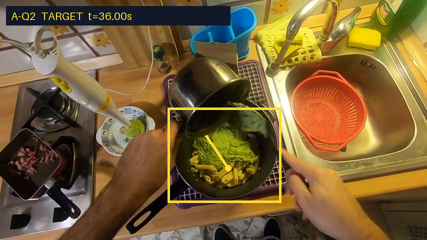

指定器具声事件触发器 · 人工听审
交付为事件触发器和原声复核片段。以下保留原混合录音，没有分离或合成声音。试听串从每个非空查询选取各类别的首个预测，每段含原交付的前后文，片段之间插入0.8秒停顿。选择与预测是否正确、置信度高低无关。
打开全部8个目标查询的可视复核
实时触发标记：对照指定器具
B-Q1：手持的黑色锅体
色条出现表示模型正在触发该类别，原录音未改变。目标图标记与下方完整视频对应。

A-Q2：下方盛有食物的黑色平底锅本体
色条出现表示模型正在触发该类别，原录音未改变。目标图标记与下方完整视频对应。

完整原录音：检查漏报